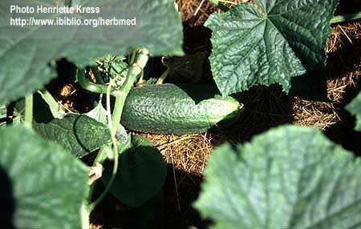

|
ECONOMICALLY
IMPORTANT PLANTS OF INDIA |
| Under-utilized Food and Fodder species and their wild relatives | Contributed by Ms.M.L Annapurna And Dr. Dhanapal, UAS, Bangalore |
Cucumis sativus L.


DIAGNOSTIC FEATURES
It
is an annual herbaceous plant trailing or climbing plant with stiff bristly
with hairy angular stems, and tendrils are unbranched. Leaves with three to
five lobes and long petioles. The flowers are axillary staminate flowers, being
more numerous than the pistillate flowers which are solitary. Fruits variable
in shape and size, from nearly globular to oblong to long cylindrical, usually
with spinous tubercles and warts, many seeded except in parthenocarpic cultivars.
Roots extensive and are shallow.
REPRODUCTIVE BIOLOGY
The flowers are axillary
staminate flowers, being more numerous than the pistillate. Under long days
and high temperatures, the plant produces more staminate than pistillate flowers.
However, under cooler conditions, the ratio of pistillate to staminate lowers
increases. It is a common experience that cucumber yield depends upon the number
of female flowers produced by the vine and growers are naturally interested
in a variety that gives more female flowers or adopting cultural practices to
increase the number of female flowers on the vine. Some European cultivars bear
parthenocarpic fruits and do not require pollination for fruit set Gynoecious
lines are used in the production of hybrid seeds, and it becomes easier because
monoecious plants need not be rogued. When ethephon is sprayed on cucumber plants,
only pistillate flowers are produced.
Breeding System
:
The cucumber is characterised by monoecious sex expression but andromonoecious,
gynoecious and trimonoecious forms are also found.
Phenology :
It flowers through out the year and the fruits are also harvested round the
year.
Pollinators:Pollination is usually by bees.
Seed Biology :Seeds are flat, white, smooth,
8-10 mm long, 3-5 mm wide, 50 seeds/ gram.
Seed Germination:
The seeds germinate rapidly if the conditions are
right, with 270 C. as the optimum temperature, the seeding rate is 2.5 Kg/ha.
Cultivation:
CLIMATE AND SOIL AND SEASON:
Cucumber is essentially a warm season crop but is successfully grown in tropical, sub-tropical and temperate regions. This is very susceptible to frost. Excess humidity promotes diseases like powdery mildew, downy mildew, anthracnose and pests such as fruit fly Cucumber prefers slightly lower temperature than watermelon and muskmelon. The optimum temperature is 26.40C. If the temperature goes above 30°C, the female flower production is reduced considerably. A well drained loamy soil is preferred for cucumber. Lighter soils that warm quickly in spring are usually used for early yields. In heavier soils vine growth will be greater and fruits mature late. In sandy river-beds, alluvial substrata and subterranean moisture of river streams support cucurbits. The soils should not crack in summer and should not be water-logged in rainy season. The soil pH should be 6-7. Soil-moisture is also important for rapid growth of cucumber.
SEASON:
In north India, sowing of cucumber is done from November- January when it is grown in
river beds. For the garden crops, it is sown by middle of February. For rainy
season crop it is sown in June-July. In south and central India where winter
is mild cucumber is grown almost through out the year. In the hills the sowing
season starts from April-May and the fruits of cucumber are harvested up to
August.
Cropping system
In garden land areas, in contrast to riverbeds, there is a definite system of
growing cucumber in rotation and mixed cropping. In riverbeds cucumber is grown
usually as a mix cropping. In rotation, it is sown in relay system just before
digging of potatoes in late January or early February in North India
Preparation of land
The land should be thoroughly prepared in order
to get fine tilth for seed bed.
Details of making furrows, raised beds, trenches, mounds, pits made for sowing
of the seeds are described under seed and sowing.
Seed and sowing
Cucumber is a seed propagated crop and in-situ
sowing is practiced. In some
cases where early crop is desired, the seeds can be sown in alkathene bags (10
15cm) of 100-200 gauge and germinated under cover to protect them from low temperature.
Spacing and pruning
The spacing required for sowing depends upon the
crop and the variety grown.
In general, row to row distance of 1.5-2.5m and hill to hill distance of 60-90cm
is
advocated.
Cucumber cv. Shinko Ago, a spacing of 100 x 60cm and pruning of plants to a
single stem gives the highest yield compared with pruned plants spaced at 100
x
90cm or non-pruned plants at both the spacings.
Research work conducted at Indian Agricultural Research Institute, New Delhi on spacing-cum-pruning requirement of monoecious cv. Poinsett of cucumber under greenhouse conditions indicates that a spacing of 60 x 60cm and pruning all the primary branches after 2 nodes gives highest yield compared to other combinations of spacings and prunings. The vines were trained vertically.
Nutrient requirement and management
Based on the extensive research conducted at Mahatma
Phule Krishi Vidvapeeth, Rahuri (Maharashtra) on spacing-cum-fertilizer requirement
of tropical gynoecious cucumber hybrid, the spacing of 1.80 x 0.45m and fertilizer
dose of 200 : 125 : 125kg NPK/ha are recommended for obtaining higher yield
under open field conditions.
Research work conducted at Mahatma Phule Krishi Vidyapeeth, Rahun (Maharashtra)
on fertigation requirement of tropical gynoecious cucumber hybrid
revealed that application of 150 : 90 : 90 N, P2O5, and K2O kg/ha (which is
50%
higher than the recommended dose) as fertigation appeared to be optimum for
better growth and fruit production. This dose also showed the better uptake
of N,
P2O5, and K2O of 136.59, 24.83 and 92.92kg/ha, respectively.
Management of irrigation water
Frequent irrigation is very important in spring-summer
crop, while in rainy
season crop irrigation may not be necessary at all if the rainfall is well distributed
between July-September. Other aspects of irrigation requirement are discussed
under muskmelon.
The dynamics of root and shoot growth during water-stress
have been studied
in cucumber cv. Long Green. The weight of roots decreased with increase in stress,
whereas that of shoots increases. During recovery, the partitioning of assimilates
between roots and shoots is reversed. Stressed plants leached out a large amount
of amino acids and sugars from the roots into sprouting media during recovery.
Management of weeds
For successful growing of cucumber, no intense
interculture is required. During
the early stage of the crops, beds, ridges, etc. need to be kept free from weeds.
At the time of top dressing with nitrogenous fertilizers, weeding and earthing
up are done. When the vines start spreading, weeding in between the rows or
ridges become unnecessary since vine growth can smother the weeds. As mentioned
in
case of muskmelon Fluchloralin at 1.20kg a.i./ha (pre-plant), Fluchloralin 0.48kg
+ Nitrofen at 0.50kg a.i./ha (pre-emergence) could be applied to control the
weeds in cucumber.
Storage:
For good storage-life of cucumber fruit, the optimum temperature is near -10°C
and a relative humidity of 85%. It is better if fruits are consumed immediately
upon removal from storage. Cucumbers can only be stored for 10-14 days. Chilling
injury as a physiological storage disorder of cucumber is noticed when fruits
are exposed to temperatures below -10°C for prolonged period.
Back to Top
Parts used
Economic
Potential and Uses
Fruits, Seeds, Leaves.
Harvesting Practices
In cucumber, pickling or slicing fruits reach optimum edible maturity stage
within a week or slightly later. Picking of fruits at the right edible maturity
stage is dependent upon individual kinds and varieties. In salad or slicing
cucumber, dark green skin colour should not turn into brownish-yellow or russeting
and white spine colour will also be a useful indication for edible maturity.
Further, over mature fruits would show carpel separation in transverse section
of the fruits. Optimum length of the fruit will be around 20-25cm at edible
maturity stage, depending upon the cultivar in case of slicing cucumber. In
small fruited types, which have pale-green skin colour, the length of the fruit
would be around 8-12cm. Here also fruits turning yellow will be over mature
and show carpel separation in cross section. In western countries, there are
definite standards of sizes for pickling cultivars and they are pickled as whole
fruit or as slices in brine. Hence most of the pickling cultivars are adopted
to machine or once-over harvest.
Yeild
About 15-20 tonnes fruit yield/ha is obtained from open field conditions using
monoecious variety. This yield could be doubled by using tropical gynoecious
hybrids. Under greenhouse conditions about 200tonnes/ha yield is obtained using
tropical gynoecious hybrids.
Produce and Products
Fresh Cucumber Pickles, Processed Pickles, Pickles from Brined Cucumbers, Processed
Pickles, Processed Pickles.
1. Natural Fermentation
Cucumbers are preserved by brining, which may or may not be accompanied by fermentation.
Cucumbers undergo lactic acid fermentation during storage, which offers the
advantages of acid formation and removal of fermentable sugars, which serve
to prevent growth of pathogenic microorganisms and to stabilize the products.
This offers the potential for flavor enhancement in the products .
Cucumbers are brined initially in solutions containing 5-8% sodium chloride during fermentation (46). After fermentation, applications of dry salt might be sufficient for the cover brines to reach 16-18° Brix (47). High salt concentration is used to prevent softening spoilage during storage and to prevent freezing of brines. Before pasteurization, preservation of pickles depends upon the conversion of carbohydrates into organic acid and/or addition of sufficient amounts of vinegar, sugar, and other ingredients to fully cured and packed cucumbers in order to minimize microbial growth. The preservation of genuine dill pickles, which are not pasteurized, depends upon the added salt, the acid formed, and by being fully cured (complete removal of sugars and change in flesh from an opaque to a translucent appearance). Processed dill pickles The pH desired is 4.2-4.3 with a litralable acidity of 0.3-0.5% as acetic acid. Garlic along with flavoring agents and sodium benzoate as a preservative are added. The containers are closed, cased, and moved to refrigerated warehouses . They are kept refrigerated (7-10°C) until purchased by consumers.
5. Fresh Cucumber Pickles
Several types of pickles including whole dills, hamburger, slices (cross-cut),
spears (cut length- wise), bread and butter, and others are made from fresh
cucumbers. Spices are added to the container before it is filled with cucumbers.
When containers are filled with cucumbers, a cover liquor consisting of water,
vinegar, salt, and other flavoring agents are added. The containers are then
capped, sent through pasteurizers, cooled, labeled, cased, and stored.
6. Pickles from Brined Cucumbers
Cucumbers are cured in a salt solution. Then desalting is carried out by immersing
the salt stock in several changes of fresh water or a continuous flow of water.
Desalting is halted when the salt level in the cucumbers reaches 150-200% of
that desired in the finished product. Once the proper degree of desalting has
been achieved, the stock can be made into pickles (dill, sweet, or sour).
7. Processed Pickles
Once the brined cucumbers are sufficiently desalted, they are processed into
genuine dills, sweet pickles, sour pickles, relishes, and other products. After
desalting, cucumbers are placed in jars or other containers and treated in a
manner similar to, that described for fresh-pack pickles. Some of these products
are not pasteurized provided that sufficient vinegar, sugar, and preservatives
have been added to ensure a long shelf-life.
F. Waste Utilization
Cucumber processing results in both liquid and solid waste. Broken cucumber
stems, leaves, and other debris is transported to local dumping areas. In general,
liquid waste from cucumber processing plants has high NaCI and 0; contents along
with a low pH and high total and suspended solid content (57). Fermentation
usually results in the production of about 40% by volume of spent brine. For
disposal of liquid waste, a popular and satisfactory system involves the use
of lagoons (7). The use of pure culture results in lowering the use of salt
and generally higher yields of products than natural fermentation procedures
(58). The spent brine contains softening enzymes, which cause softening of cucumbers
if reused. Heat treatment of 80°C for 30 seconds was sufficient to inactivate
pectinase from molds common on fruits and flowers. Chemical treatment involving
raising the pH of brine to 11.0 or higher for 36 hours resulted in 90% inactivation
of pectinase .